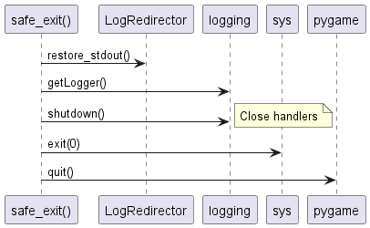

Main Module
The Main module serves as the entry point for the Property Tycoon game application. It initializes the core game environment, manages the main application loop, orchestrates transitions between different game states (like menus, gameplay, and end screens), and handles the overall flow of the application from startup to shutdown.
The Main module is responsible for:
Initializing Pygame, sound, fonts, and logging.
Displaying introductory logo screens (show_company_logo, show_logo_screen).
Managing the main menu and navigation between different UI pages (Settings, How To Play, Start Game configuration) within the main async def main() loop.
Gathering game configuration (players, AI settings, game mode) through interaction with UI pages like StartPage, AIDifficultyPage, and GameModePage.
Creating the core Game object and Player objects via the create_game function.
Running the main game loop via the async def run_game() function, which utilizes GameRenderer, GameEventHandler, and GameActions.
Handling the end-game sequence via the async def handle_end_game() function, displaying results using EndGamePage.
Managing window resizing and applying settings via async def apply_screen_settings().
Ensuring safe application shutdown via safe_exit().
High-Level Design
Use Case Diagram
This diagram illustrates the main interactions a user (or the system itself) has with the application, primarily managed or initiated by the Main module.
This diagram shows the primary classes instantiated or orchestrated directly by the functions within Main.py.
This diagram shows the high-level states the application transitions through, managed primarily by the main() function loop.
![[*] --> Initializing : Application Start
Initializing --> ShowingLogos : Initialization Complete
ShowingLogos --> MainMenu : Logos Shown
MainMenu --> MainMenu : Navigate Submenus (Settings, HowToPlay)
MainMenu --> ConfiguringGame : Start New Game
MainMenu --> [*] : Exit Application
ConfiguringGame --> ConfiguringGame : Next Step (Players -> AI -> Mode)
ConfiguringGame --> MainMenu : Back
ConfiguringGame --> Gameplay : Configuration Complete
Gameplay --> Gameplay : Game Loop Iteration (Events, Render, AI, Time Check)
Gameplay --> Paused : Pause Game (Abridged Mode)
Paused --> Gameplay : Resume Game
Gameplay --> EndGameScreen : Game Over (Win/Time Limit/1 Player Left)
Gameplay --> [*] : Exit Application (e.g., via ESC in some contexts or error)
EndGameScreen --> MainMenu : Play Again
EndGameScreen --> EndGameScreen : View Credits
EndGameScreen --> [*] : Quit](../_images/plantuml-6ba38d0bd1447a9b494eca49f43069e8bfbd9c58.png)
Detailed Design
Class Interaction Diagram (Main Orchestration)
This diagram shows the key classes and how the functions within Main.py orchestrate their creation and interaction. It focuses on the flow controlled by main(), create_game(), run_game(), and handle_end_game().
Illustrates the custom LogRedirector used to pipe stdout/stderr to the logging framework.
This diagram shows the sequence of calls from starting the application (main()) through creating the game instance.
Details the user interactions within the main() loop to configure and start a new game.
This diagram shows a simplified overview of the main run_game loop, highlighting event handling, rendering, and AI turn processing.
Illustrates the steps performed when the application exits via safe_exit().

Sequence Diagram: Safe Shutdown